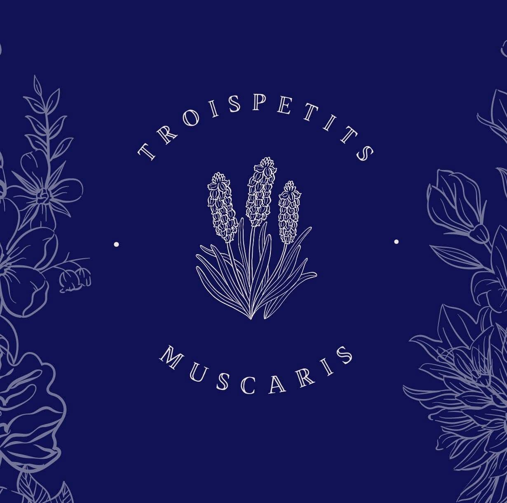

Retouches & cours de couture à Mont-de-Marsan, dans une ambiance conviviale et bienveillante.
Nous écrireClaire Faure vous accueille dans son atelier de couture, place Porte Campet, pour des retouches classiques comme pour des cours de couture en petit groupe, tous niveaux.
« Chacun avance à son rythme »
Note réelle vérifiée sur la fiche Google, avis affichés dès la connexion du widget.
5 place Porte Campet, 40000 Mont-de-Marsan · Mercredi-vendredi, 10h-18h · 06 37 77 62 43